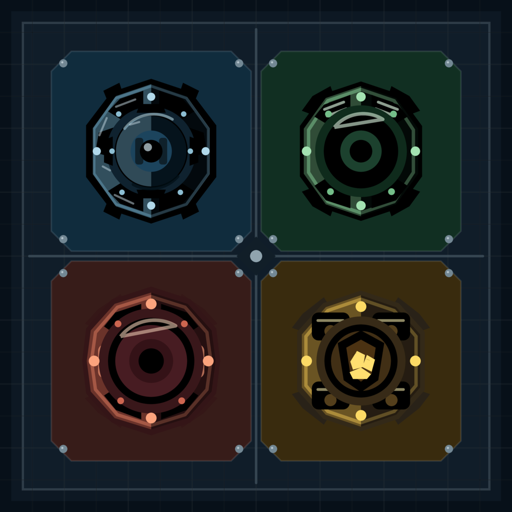

Lattice TD
最終更新日: 2026 年 9 月 21 日
Lattice TD(以下「本アプリ」)は、個人情報を収集しません。
本アプリは T.Furukawa(以下「開発者」)が個人で開発・配布している iPhone / iPad 向けのゲームです。このページでは、本アプリがどのような情報を扱い、扱わないかを説明します。
ありません。本アプリには、氏名・メールアドレス・位置情報・端末識別子・利用状況などを開発者に送信する仕組みはありません。開発者が運営するサーバも存在せず、本アプリがインターネットに接続して開発者と通信することはありません。
ステージのクリア状況、自己ベスト記録、累計撃破数、言語・配色・音などの設定は、お使いの端末の中にだけ保存されます。これらは本アプリを削除すると端末から消え、他の端末に同期されることはありません。
本アプリは、Apple が提供する Game Center を実績とリーダーボードのために任意で利用します。Game Center にサインインしている場合、実績の解除状況とステージごとのスコア(残り資金・所要時間・到達ウェーブ数)が Apple に送信され、Apple のリーダーボード上であなたの Game Center ニックネームとともに表示されることがあります。
この情報は Apple が管理し、Apple のプライバシーポリシーに従って取り扱われます。開発者は、Game Center を通じてプレイヤーの氏名やメールアドレスなどの個人情報を受け取ることはありません。
Game Center の利用は任意です。サインインしなくても本アプリのすべての機能を遊べます。iOS の「設定 > Game Center」からサインアウトすると、以後この送信は行われません。
本アプリには広告を表示しません。利用状況を解析する第三者のサービスも組み込んでおらず、他社のアプリや Web サイトをまたいだトラッキングも行いません。
本アプリは年齢を問わず個人情報を収集しません。したがって、13 歳未満のお子様の個人情報を意図して収集することもありません。
本アプリの機能が変わり、情報の扱いが変わる場合は、このページを更新し、冒頭の最終更新日を改めます。重要な変更がある場合は、App Store のアップデート情報でもお知らせします。
本ポリシーに関するご質問は、お問い合わせフォームからお送りください。
Last updated: September 21, 2026
Lattice TD (the "App") does not collect personal information.
The App is a game for iPhone and iPad developed and distributed by T.Furukawa (the "Developer"), an individual. This page explains what information the App handles and what it does not.
None. The App has no mechanism to send your name, email address, location, device identifiers, usage data or anything else to the Developer. The Developer operates no server, and the App never connects to the internet to communicate with the Developer.
Stage clear status, personal best records, total kill count, and settings such as language, color scheme and sound are stored only on your device. They are removed when you delete the App and are not synced to other devices.
The App optionally uses Apple's Game Center for achievements and leaderboards. If you are signed in to Game Center, your achievement progress and per-stage scores (remaining gold, clear time and endless wave count) are sent to Apple and may be shown on Apple's leaderboards alongside your Game Center nickname.
This information is managed by Apple and handled under Apple's Privacy Policy. The Developer does not receive players' names, email addresses or other personal information through Game Center.
Game Center is optional. Every feature of the App is available without signing in. If you sign out under Settings > Game Center on iOS, no further data is sent.
The App shows no advertisements. It includes no third-party analytics services, and it does not track you across other companies' apps or websites.
The App does not collect personal information from anyone, regardless of age. Accordingly, it does not knowingly collect personal information from children under 13.
If the App's features change in a way that affects how information is handled, this page will be updated and the date at the top revised. Significant changes will also be noted in the App Store release notes.
Questions about this policy can be sent through the contact form.